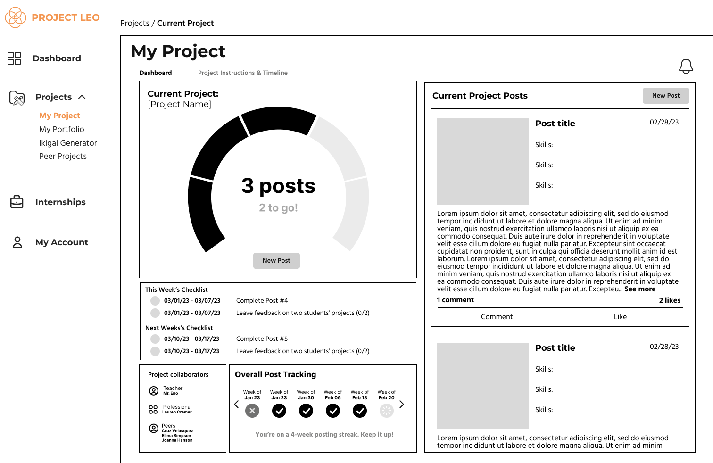
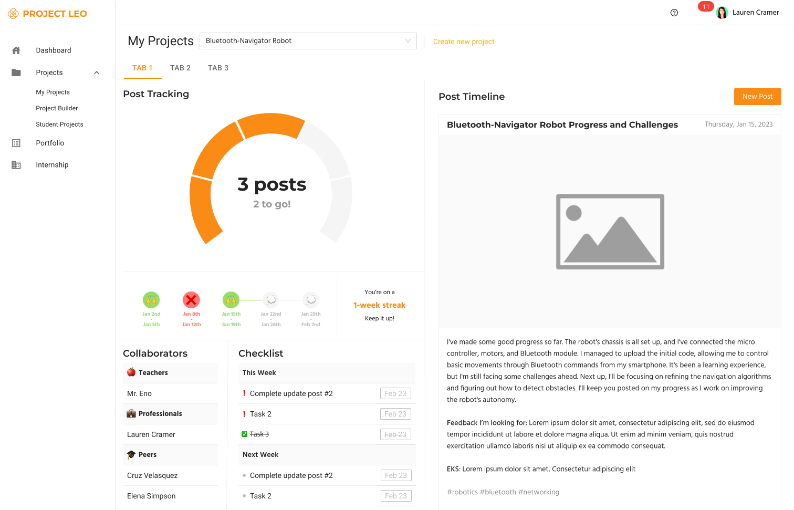

Project Leo
About Project Leo
Project Leo offers a software solution aimed at enhancing student engagement by creating personalized projects that align individual interests and career goals with specific learning objectives. This approach seeks to improve academic performance, increase student and teacher engagement, and prepare students for relevant careers. The platform comprises three main components:
Project Builder: Utilizes large language models to generate tailored educational experiences by integrating learning objectives with student interests and career aspirations.
Community Posts: Provides a space for student reflection, collaboration, and feedback, enabling teachers to offer targeted support.
Professional Portfolio: Allows students to showcase their work to academic institutions and potential employers, demonstrating mastery beyond traditional transcripts.

My Work on Project Leo
I started ground zero on this project in terms of design work. I was the sole and lead designer on the project. The CEO and I worked very closely in the beginning to make sure we were aligned in the initial vision of Project Leo.
Below is an example of a low-fi and a high-fi mockup.
All Figma mockups can be seen from the links below.

Links
Figma - Low-Fi MockupsFigma - Hi-Fi Mockups